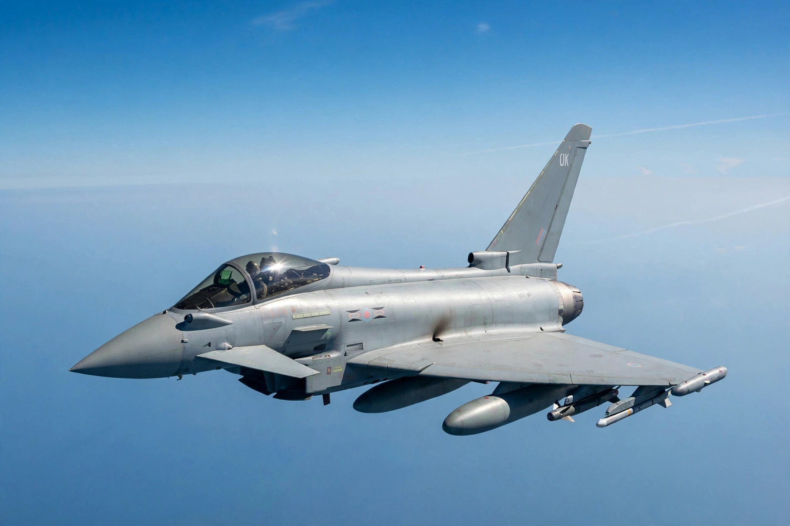

| Eurofighter Typhoon | |
|---|---|
| Role | Multirole fighter |
| Manufacturer | Eurofighter Jagdflugzeug GmbH |
| First flight | 27 March 1994 |
| Introduction | 4 August 2003 |
| Status | In service, in production |
| Primary users | Royal Air Force, German Air Force, Italian Air Force, Spanish Air and Space Force |
| Crew | 1 or 2 |
| Powerplant | 2 × Eurojet EJ200 afterburning turbofans |
| Maximum speed | Mach 2.0 |

The Eurofighter Typhoon is a European multinational twin-engine, supersonic, canard-delta wing, multirole fighter aircraft. The Typhoon was designed originally as an air-superiority fighter and is manufactured by a consortium of Airbus, BAE Systems and Leonardo that conducts the majority of the project through a joint holding company, Eurofighter Jagdflugzeug GmbH. The NATO Eurofighter and Tornado Management Agency, representing the United Kingdom, Germany, Italy and Spain, manages the project and is the prime customer.
The aircraft's development effectively began in 1983 with the Future European Fighter Aircraft programme, a multinational collaboration among the UK, Germany, France, Italy and Spain. France later withdrew over disagreements about design leadership and requirements, developing the Dassault Rafale independently. The first prototype flew on 27 March 1994. Political debate following German reunification and the end of the Cold War nearly cancelled the programme, but production contracts were signed in 1998. The Typhoon entered service in 2003, substantially later than originally planned.
The Typhoon is a deliberately unstable, fly-by-wire aircraft built around a canard-delta configuration with relaxed static stability, giving exceptional agility, particularly at supersonic speeds. Its two Eurojet EJ200 engines allow it to supercruise — sustain supersonic flight without afterburners — under certain conditions. Sensors include the CAPTOR radar (being replaced by the AESA ECRS in newer standards), the PIRATE infrared search-and-track system, and the Defensive Aids Sub-System. The airframe makes extensive use of carbon-fibre composites, and measures to reduce radar cross-section, though not a stealth aircraft, are incorporated.
Typhoons first saw combat during the 2011 military intervention in Libya, flying air-defence and strike missions from Italy and later over Syria and Iraq against the Islamic State as part of Operation Shader and allied campaigns. Partner and export aircraft provide quick-reaction alert over Europe and the Falkland Islands. Export customers include Austria, Saudi Arabia, Oman, Kuwait, Qatar and (on order) Turkey and additional German and Spanish buys under "Tranche 4/5" programmes.
The Typhoon carries a 27 mm Mauser BK-27 cannon and up to 13 hardpoints for weapons including the Meteor and AMRAAM beyond-visual-range missiles, IRIS-T and ASRAAM short-range missiles, Storm Shadow cruise missiles, Brimstone anti-armour missiles, and Paveway laser-guided bombs. Successive capability upgrades (such as the UK's Centurion configuration) transformed it from a pure air-defence fighter into a fully swing-role platform.